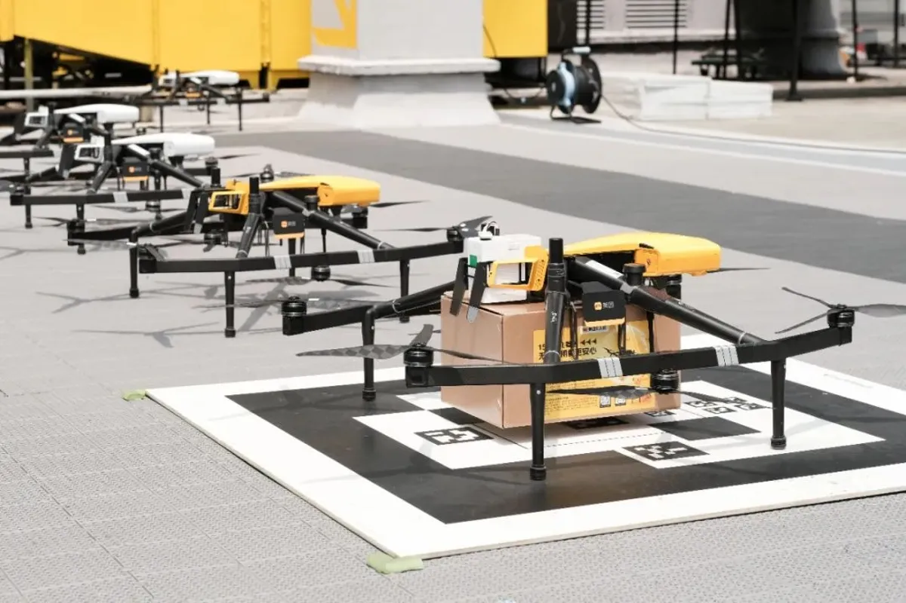
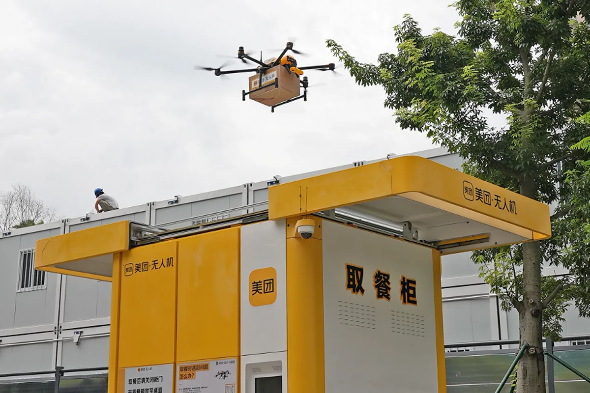
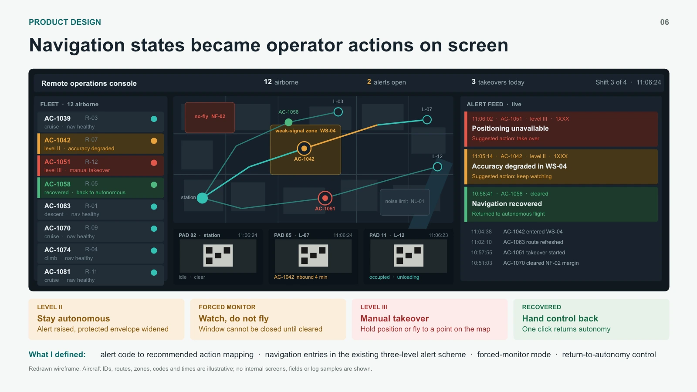
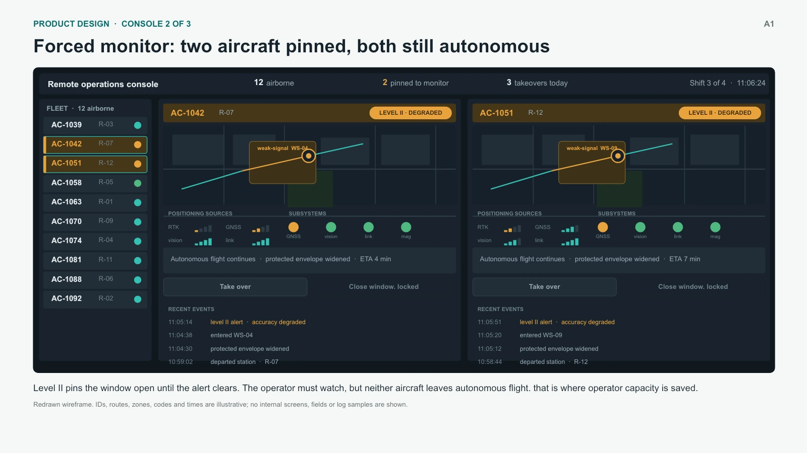
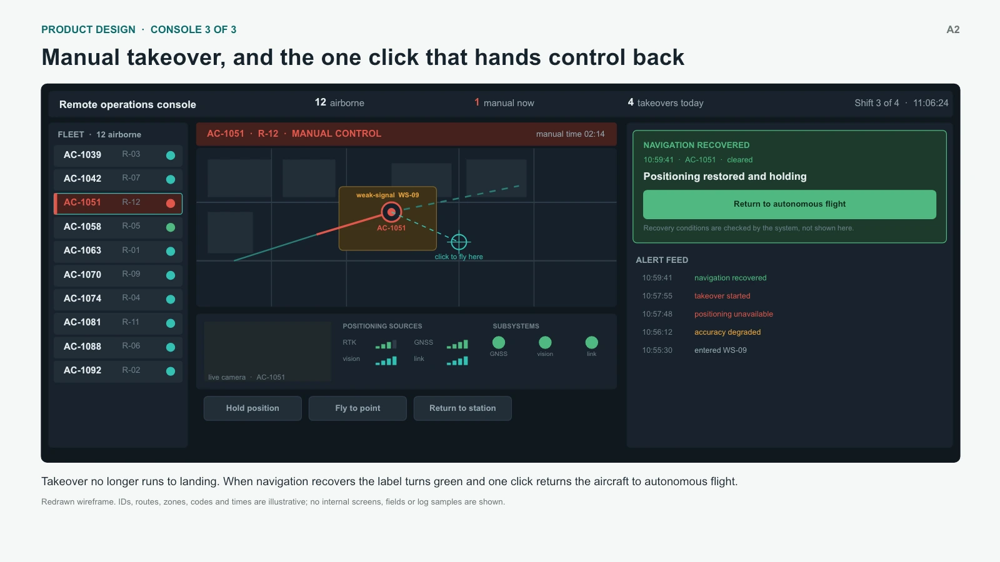

Technical capability
Reduce navigation degradationIdentify recurring weak-signal areas and improve accuracy through scenario-specific technical and product changes.
01 · Overview
An emerging drone delivery business needed to expand its routes. I led navigation and operations improvements that reduced manual workload while keeping safety controls intact.
The intervention reduction is measured on takeover logs for recovered flights. Alert coverage refers to historical anomaly cases, not a live detection rate. Route growth also depended on other changes and is not attributed to this project alone.
02 · The business constraint
Route growth increased the workload each operator needed to support.
Planned growth in fixed delivery routes.
An emerging delivery business, with flight and operations systems still evolving.
Service guardrailsGrow without worsening on-time delivery, failure or complaint rates.

Couriers drop off orders; staff load drones.
Fixed delivery corridor
Live status to operations

The drone delivers from above.
Each operator cycles through multiple drones to check for anomalies.
Today
Route expansion
More drones to support as routes grow.
Fleet icons illustrate workload growth, not actual drone counts or staffing ratios.
Photos from public news coverage of the product.
Diagnosis
03 · Three improvement directions
Navigation capability, downstream flight behaviour and reliable alerts formed coordinated workstreams, not sequential releases.
Satellite, vision and sensors
Flight control and route planning
Autonomous flight, monitoring or manual control
Identify recurring weak-signal areas and improve accuracy through scenario-specific technical and product changes.
Keep eligible flights autonomous with a wider safety envelope and operator monitoring. Allow manual flights to return to autonomy after the recovery checks pass.
Extend alerts and map them to monitoring or takeover recommendations. Use logs and historical replay to evaluate behaviour.
Intended outcome Support route growth with lower operator workload and safety controls intact.
Delivery across eight teams. Automated bad-case capture remained a gap, discussed in the reflection below.
04 · Design & trade-offs
Two modes changed when an operator needed to act and when control could return to the drone.
When navigation degrades but remains usable, eligible drones stay autonomous with a wider safety envelope and operator monitoring.
After manual takeover, recovered navigation can support autonomous flight again once the recovery checks pass and the operator confirms.
Trade-off 01
The decision: Require a multi-source fix, an accuracy threshold, a stable time window, a fresh route and an operator click before control returns to the drone. These checks balance stable recovery with the opportunity to reduce manual intervention.
Trade-off 02
I used takeover logs to assess the recovery opportunity, then combined that evidence with the long-term value of a complete handover workflow.
The decision: Build the reversible handover with strict recovery checks. The logs supported a near-term opportunity to save operator time; system completeness provided a longer-term reason to invest as the delivery network expanded.
05 · The operator experience
Navigation states become alerts, recommended actions and controls. These interfaces are reconstructed from the case presentation.

Reconstructed interface, not an internal screenshot. Drone IDs, routes, codes and times are illustrative.


Both interfaces are reconstructed illustrations from the presentation. IDs, routes, codes and times are illustrative. Select either image to view it at full size.
06 · Evidence before exposure
Testing exposed a route-refresh risk. The team corrected the design before expanding route exposure.
Past routes and known navigation failures.
Exception cases re-run against the new logic.
100+ test flights on target routes.
1, 10, 50 and 100 routes, then fleet-wide; each expansion follows release checks.
Project: 6 months
Phased rollout: 1.5 months
The recovery requirements stayed intact. The release date moved by one week.
07 · What I take from it
Two principles I carry into the next product problem.
What I contributed
I worked backwards from the business constraint, defined three improvement directions across the system and led delivery with eight teams. Engineering and operations built and validated the changes with me.
What I would change
Incidents were collected by hand. Limited onboard storage and no automatic log-return channel left too few complete snapshots for replay. Earlier investment in observability would have strengthened later validation.
Systems thinking connects product decisions to company goals. Here, better navigation also needed different flight responses and operator workflows.
Product judgement can extend what a system can do through scenario design, operating rules and human support, while keeping safety requirements intact.